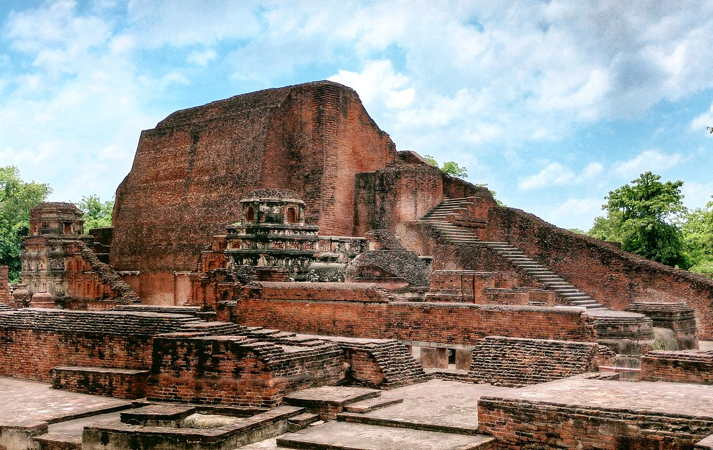
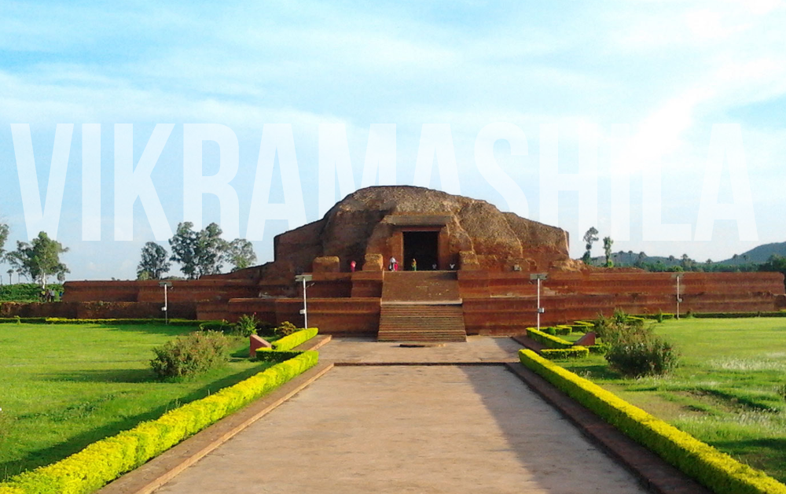
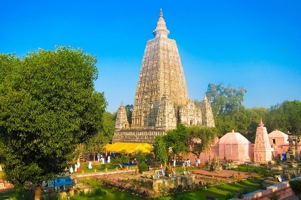
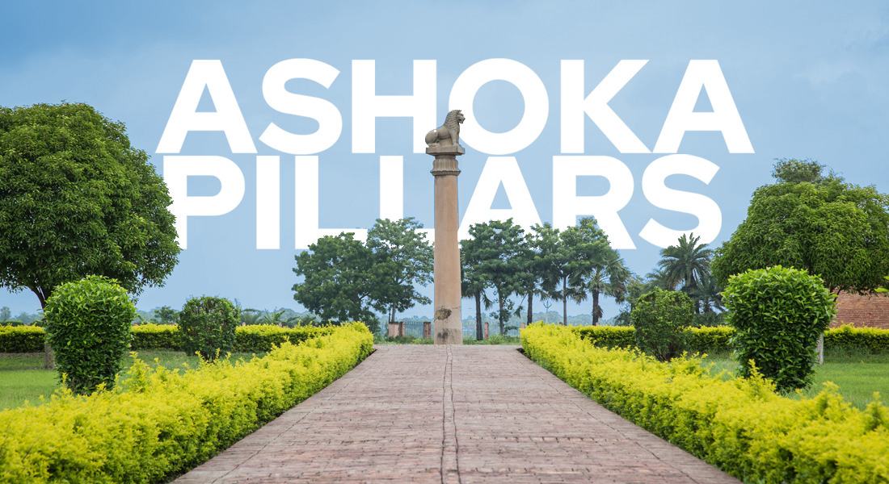
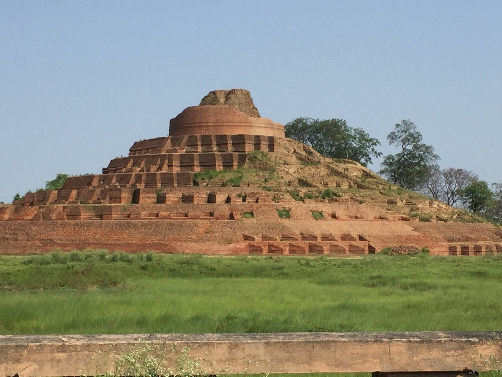
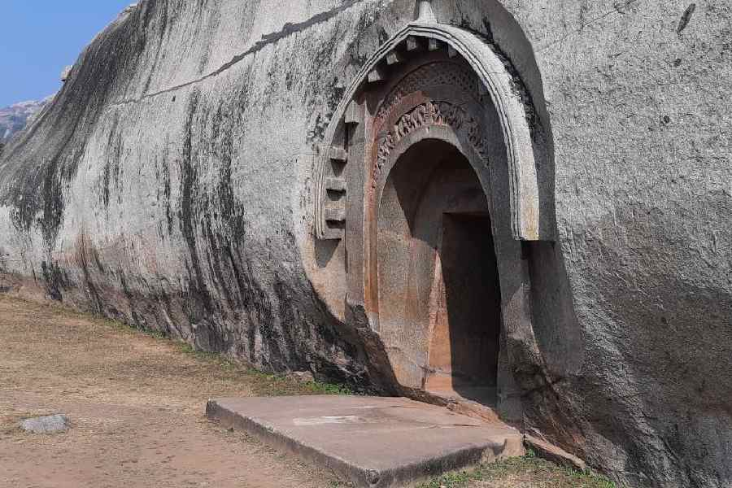

Heritage Sites
Bihar's heritage is rich and ancient, marked by its role as a cradle of major religions like Buddhism and
its history as the center of powerful empires like the Mauryas and Guptas. This legacy is visible in its
historic sites such as Bodh Gaya, the ancient Nalanda University, and numerous other Buddhist and Hindu temples
|  |
Nalanda UniversityOne of the world’s oldest universities, a great center of learning. |
Vikramshila UniversityAnother renowned ancient seat of Buddhist learning. |
 |
|  |
Mahabodhi TempleIt is one of the four most holy sites in Buddhism, |
Ashokan PillarThe earliest surviving stone monuments in India, |
 |
|  |
Kesari StupaIt is the world's largest and tallest Buddhist stupa, standing at 104 feet and marking a site where Lord Buddha once stayed. |
Barabar CavesThe Barabar Caves are India's oldest surviving rock-cut caves, dating to the 3rd century br BCE Mauryan period. |
 |